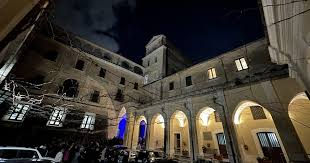

II sec. a.C.
Fondazione di Nuceria Alfaterna, uno dei principali centri osco-romani della Campania.
Nel cuore di Nocera Inferiore sorge il Vescovado, culla millenaria di storia, fede e tradizione. Dove nacque Nuceria, oggi si cammina tra pietre che raccontano secoli. Tra sacro e quotidiano, il Vescovado custodisce un patrimonio spirituale e artistico che continua a vivere, a emozionare, a unire generazioni.
Scopri la storiaLà dove si erge oggi la Cattedrale di San Prisco, un tempo sorgeva il cuore più antico di Nuceria. Il Vescovado non è solo un quartiere ma è il luogo dove il tempo si è sedimentato nella pietra, nei vicoli, nei portali, nelle campane. Qui i longobardi eressero castelli, i monaci pregarono e trascrissero il sapere, e i vescovi guidarono spiritualmente una comunità in crescita.
Visitare il Vescovado significa attraversare la storia viva di Nocera Inferiore, immergersi nel suo spirito e riscoprire la propria identità culturale. Tra leggende e architetture, ogni passo racconta una pagina del passato.
"Dal periodo romano alla dominazione longobarda, il Vescovado è stato testimone silenzioso di secoli che hanno plasmato il destino di Nuceria.
Qui, tra queste pietre antiche, si sono consumate battaglie che hanno deciso il dominio sulla Campania, rinascite culturali che hanno ridisegnato l’identità del territorio, e miracoli che ancora oggi alimentano la devozione popolare.
Fondazione di Nuceria Alfaterna, uno dei principali centri osco-romani della Campania.
Il Vescovado nasce come centro ecclesiastico, cuore della nuova organizzazione religiosa post-romana.
La Cattedrale viene ristrutturata secondo lo stile barocco, diventando simbolo del potere spirituale.
Il Vescovado è un polo culturale, scrigno di memoria e simbolo identitario per Nocera.
Storie antiche, simboli nascosti e misteri che resistono al tempo
Tra i vicoli antichi si intrecciano racconti affascinanti: miracoli inspiegabili, apparizioni sfuggenti e misteri senza tempo. Ogni pietra sembra custodire un segreto, ogni ombra sussurra una storia. Lo sapevi che…

Cuore spirituale della città, simbolo della sua storia religiosa.

Un labirinto di pietra dove ogni angolo racconta un'epoca.
Luoghi di preghiera e cultura che hanno plasmato l'identità nocerina.

Custode di preziosi documenti storici, offre uno sguardo unico sulla memoria della diocesi.

Elegante residenza storica dei vescovi, con sale affrescate e arredi d'epoca.

Scorci mozzafiato sul territorio campano, tra colline, campanili e storia millenaria.

Il primo vescovo di Nocera, la cui memoria vive nella cattedrale a lui intitolata.

Artefice della rinascita spirituale nel Settecento, protagonista di riforme liturgiche.

Vescovo e fondatore dei Redentoristi, fu spesso ospite del Vescovado, lasciando un'impronta profonda.

Figura centrale durante l’Unità d’Italia, difese la diocesi in tempi di grandi cambiamenti.

Canonico e scrittore del XIX secolo, raccolse documenti preziosi sulla storia ecclesiastica di Nocera.

Cresciuta nella diocesi, Suor Maria Celeste Crostarosa portò il messaggio cristiano in terre lontane, testimoniando la forza della fede.
Esplora gli eventi, le passeggiate guidate, le mappe interattive e la storia viva del quartiere.
Inizia il viaggio